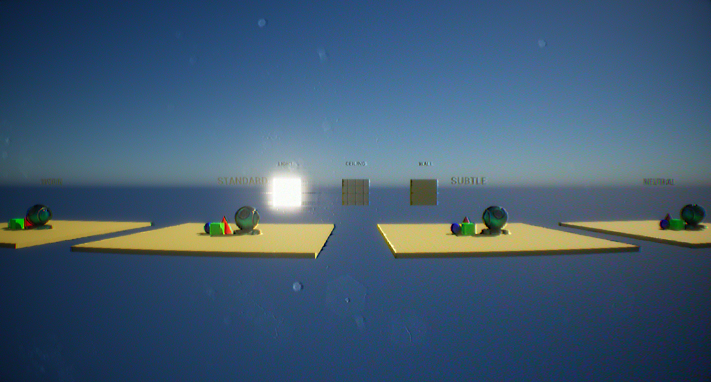

Overview
A post-process material pack that reproduces VHS camcorder picture degradation. Place the BP_RetroVHS_Rig actor in a level to apply it; it is controlled through material instance parameters and post-process volume settings. No plugins, C++ or third-party assets are used.

BlendWeight = 1).| Effect | Description |
|---|---|
| Fisheye | Equidistant-projection lens distortion |
| Band noise | Tape noise in horizontal bands |
| Chroma noise | Random RGB noise |
| Color bleed | Horizontal colour bleeding |
| Aperture sharpening | Unsharp mask on the luminance component |
| LUT | Four NTSC-style colour LUTs. Default: Standard |
Installation
- Use “Add to project” on Fab. For a manual install, copy the
Content/RetroVHSfolder into the target project'sContentfolder. - Place
BP_RetroVHS_Rigin the level. Adjust the material instance parameters and the post-process volume settings such as the LUT to taste.
Configuration
Settings are split between two assets.
| Function | Asset | Location · Notes |
|---|---|---|
| Effect parameters (fisheye, band noise, chroma noise, color bleed, sharpening) | MI_RetroVHS | /Game/RetroVHS/Materials/MI_RetroVHS. A parameter takes effect only when its checkbox is enabled. See Parameter list |
| LUT · exposure · bloom · lens dirt · vignette · chromatic aberration · blendable slot | BP_RetroVHS_Rig | Rig actor in the level → Details → PostProcess component. The checked entries are the values the rig overrides |
| Overall strength · on/off | MI_RetroVHS.BlendWeight | 1 = full, 0 = off. Also multiplies the fisheye strength. Do not use the post-process volume's blendable Weight for strength: it interpolates the parameters toward the base material defaults |
Pack contents
26 assets in total. The only external references are engine content: basic shapes (BasicShapes), the material preview mesh, the default text-render font and material, and T_ScreenDirt02_w.
Asset (/Game/RetroVHS/) | Type | Role |
|---|---|---|
Blueprints/BP_RetroVHS_Rig | Blueprint | Root = unbound PostProcessComponent. The only actor placed in the level |
Materials/M_RetroVHS | Master material (Post Process) | Combined graph for fisheye, band noise, chroma noise, color bleed and sharpening. Holds the parameter defaults |
Materials/MI_RetroVHS | Material instance | The instance registered on the rig. All user-facing parameters |
Textures/T_RetroVHS_BandNoise_256 | Texture 256×256 | Latin-square noise. Source for the chroma noise |
Textures/T_RetroVHS_LUT_{Neutral, Subtle, Standard, Worn} | LUT textures 256×16 × 4 | NTSC-style colour LUTs. Rig default: Standard |
Maps/L_RetroVHS_Overview | Map | Overview map with every asset laid out. Five effect plates (REFERENCE, FISHEYE, CHROMA NOISE, COLOR BLEED, SHARPEN) and four LUT plates, each with 3 colour probes and the MI_Metal preview mesh, plus 3 panels for the wall, ceiling and light materials. Each plate's volume sets the effect instance and the LUT; the rig is placed but disabled in this map |
Maps/L_RetroVHS_Showcase | Map | Demo scene. A 24 × 24 m interior built from engine basic shapes and M_BackRoom. One rig with the Standard LUT. Lit only by the emissive ceiling panels, so Lumen is required |
Demo/Materials/M_BackRoom, MI_BackRoom{Plane, Wall, Ceiling, Light} | 1 master + 4 instances | World-aligned tri-planar material. Tiles in centimetres regardless of mesh UVs. Floor · wall · ceiling (grid mask) · fluorescent panel (emissive) |
Demo/Materials/M_Tint, MI_Metal, MI_R, MI_G, MI_B | 1 master + 4 instances | Flat-colour probe materials. MI_Metal is a clear-coat instance; R/G/B are primary colours for checking color bleed |
Demo/Materials/MI_RetroVHS_{Fisheye, ChromaNoise, ColorBleed, Sharpen} | 4 instances | For the effect plates of the overview map. Instances of M_RetroVHS with a single effect enabled |
Demo/Textures/T_BackRoomCeilingMask, T_BackRoom_ORM_Flat | Textures 1024², 4×4 | Ceiling grid mask · flat ORM default |
Requirements
| Item | Details |
|---|---|
| Engine | Unreal Engine 5.3~5.8. Saved with 5.3, so it opens in later versions |
| Platform | Verified on Windows, DirectX 12. A post-process material at After Tonemapping; the G-buffer is not used |
| Exposure setting | The rig's exposure values are in EV100. In projects where r.DefaultFeature.AutoExposure.ExtendDefaultLuminanceRange is False, re-set the rig's Exposure Min / Max |
| Lumen | Required only for the showcase map. The pack itself does not restrict the renderer |
Parameter list
Defaults are the values of the master material M_RetroVHS. MI_RetroVHS ships with only BlendWeight overridden.
| Parameter | Default | Description |
|---|---|---|
BlendWeight | 1.0 | Master gate. 0 = off |
LensStrength | 45 | Fisheye half field of view (degrees) |
LensZoom | 1.0 | Fisheye magnification |
FrameRate | 29.98 | Noise update rate (fps) |
BandCount | 100 | Fraction of rows affected by bands (value/256) |
BandPower | 0.5 | Tap offset multiplier on band rows. 0 = no bands |
NoisePower | 0.2 | Chroma noise strength |
NoiseSize | 1.0 | Chroma noise grain size |
FilterSize | 1.0 | Tap spacing (pixels), shared by colour bleed, band noise and sharpening. 0 = none of the three |
BleedPower | 1.25 | Chroma gain. 1.0 = original saturation, 0 = greyscale |
SharpenPower | 5.0 | Aperture sharpening strength |